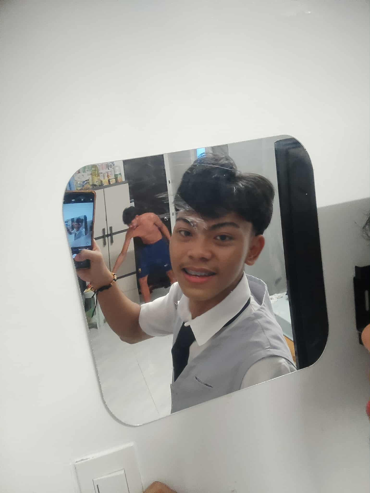
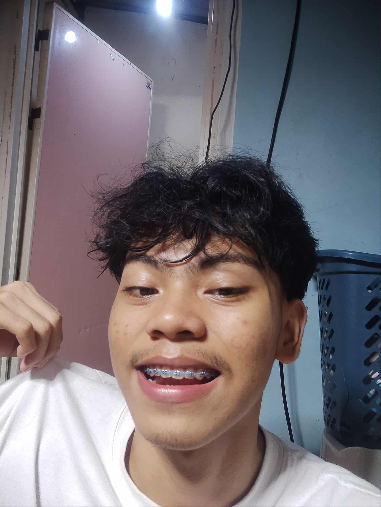
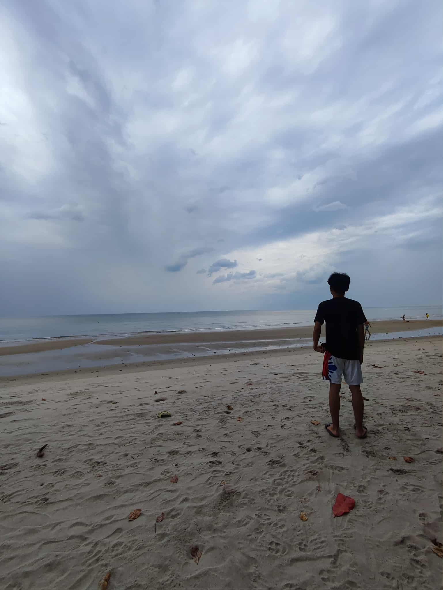
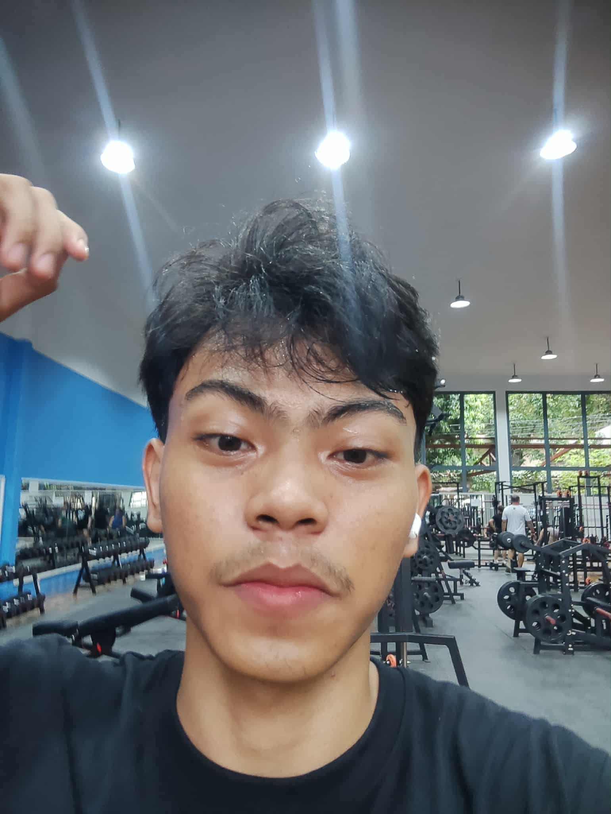
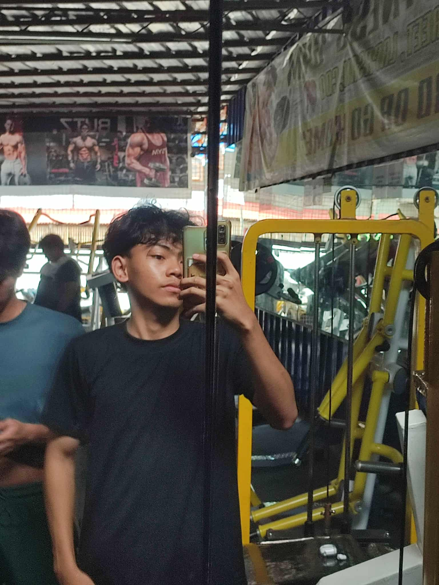
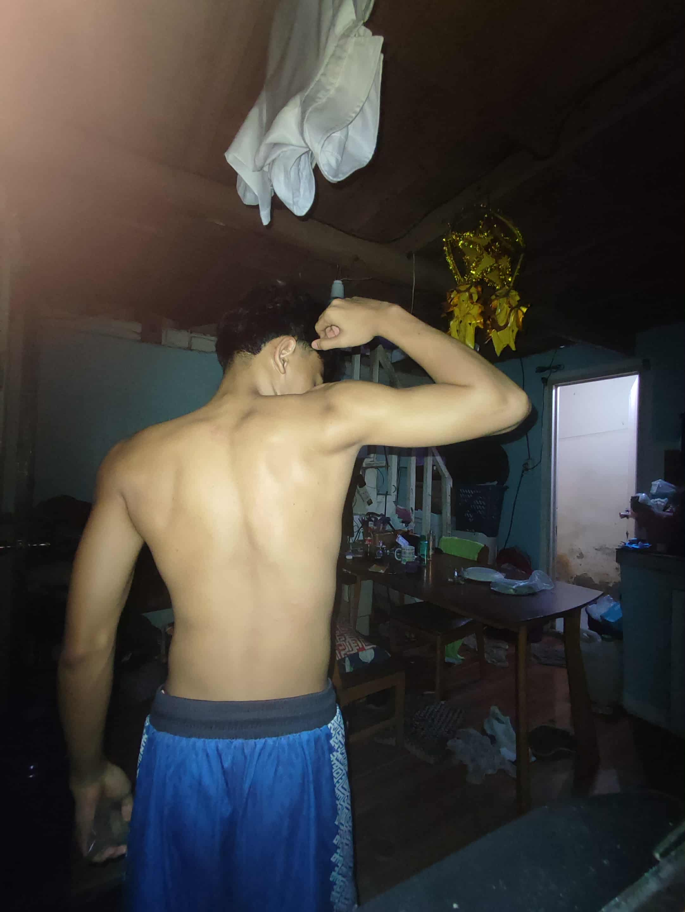
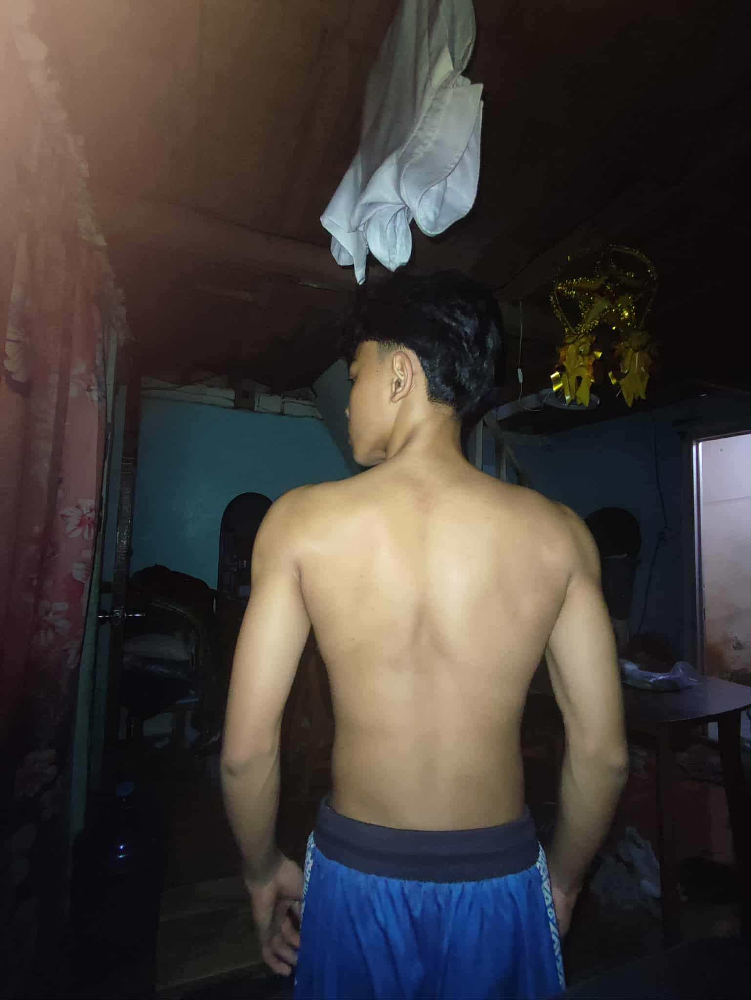
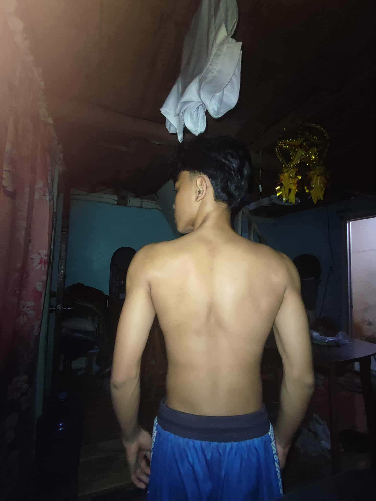
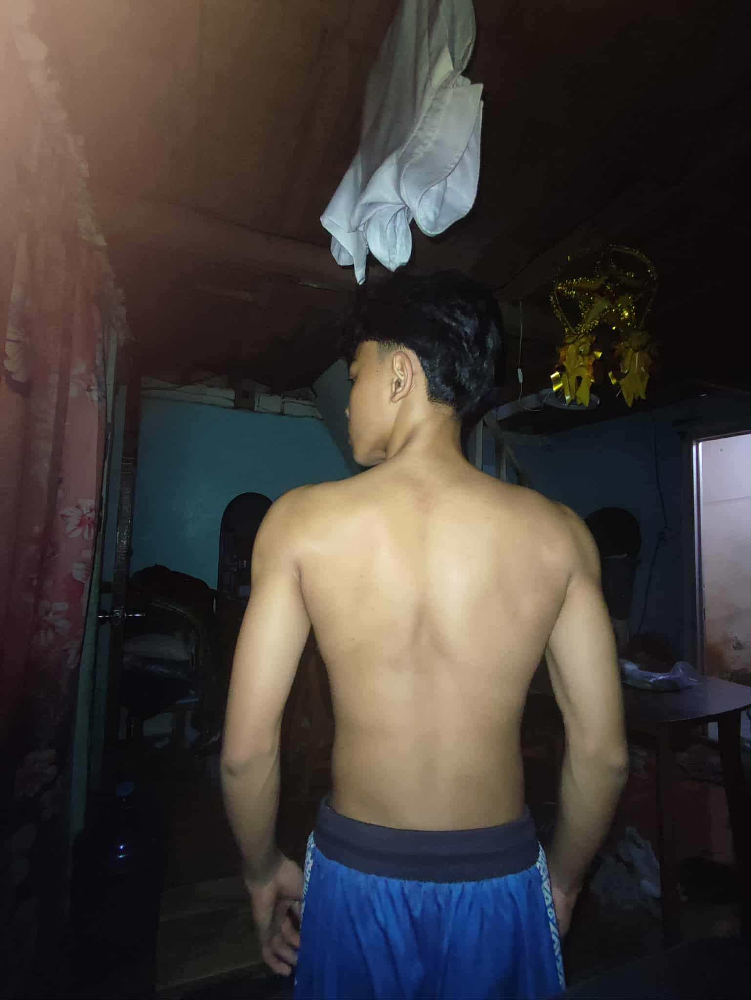

About me
My name is Fritz Vohn Manticahon DaydayI am 16 years old. I live in Cagayan de Oro City, Philippines! I am currently studying at LOURDES COLLEGE. Being a student has given me the chance to gain knowledge, meet new people, and experience things that help shape my character. Growing up in Lapasan Lambago Bayside, I have learned to value hard work, determination, and the importance of family and community. These values guide me in my daily life and influence the way I handle challenges, whether in school or in personal situations.
Aside from academics, I have variety of interests that I enjoy in my free time. I like Coding, playing basketball, workout, and scrolling through tiktok app which allow me to express myself and discover my creativity. These activities also give me balance, helping me relax and recharge after busy school days.
As a student, I believe that is learning does not only come from books and lessons, but also from expieriences. Every day brings new opportunities to improve wether through group activities, projects, or simple interaction with classmate and teachers. These moments help me become a more open-minded and understanding person.
Overall, I would describe myself as someone who is curious, hardworking, and eager to learn. I may still be young, but I am continuously discovering who I am and what I can achieve. With each experience, I grow more confident in myself and my abilities, and I look forward to what the future holds.






 

